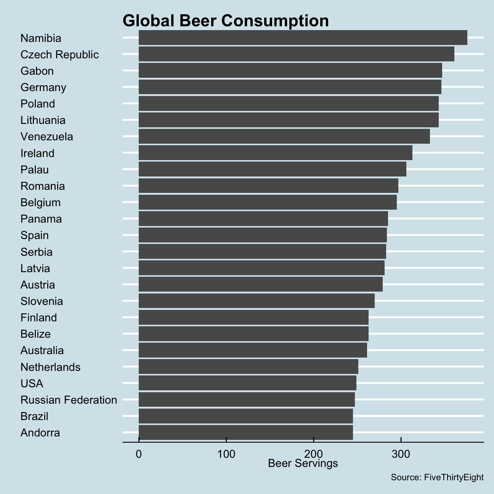
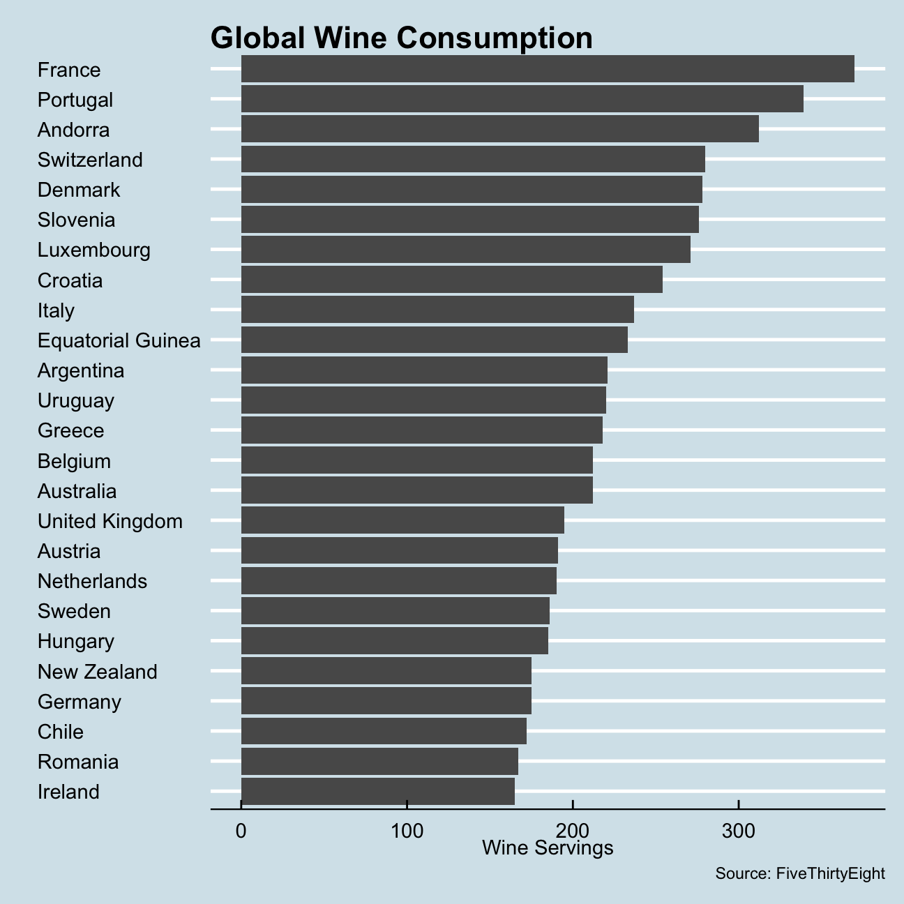
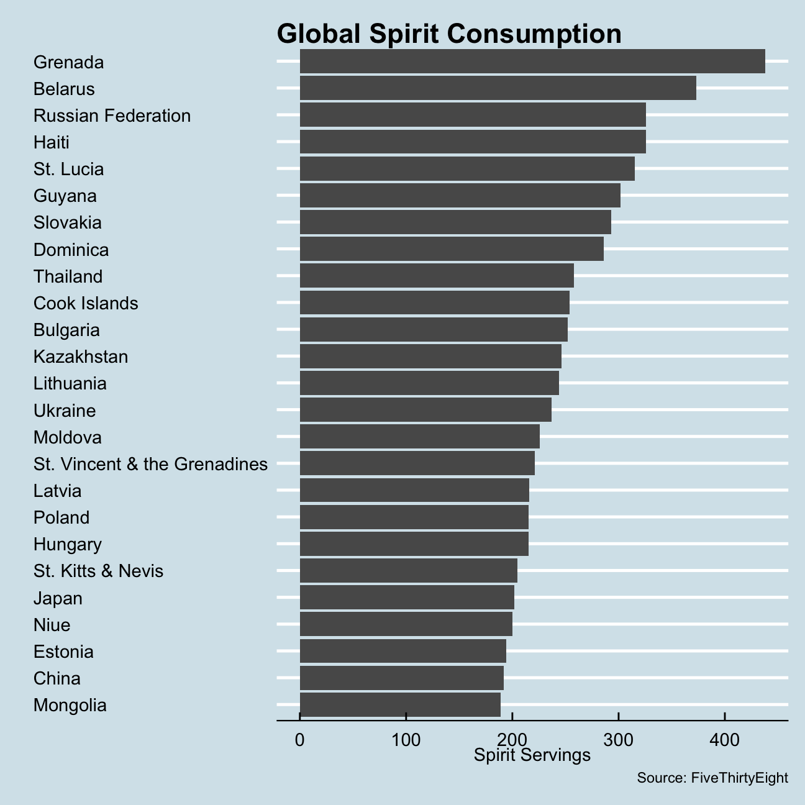

library(fivethirtyeight)
data(drinks)The drinks data has 1 character variable and 4 numeric variables and there are no missing values we should worry about.
skim(drinks)| Name | drinks |
| Number of rows | 193 |
| Number of columns | 5 |
| _______________________ | |
| Column type frequency: | |
| character | 1 |
| numeric | 4 |
| ________________________ | |
| Group variables | None |
Variable type: character
| skim_variable | n_missing | complete_rate | min | max | empty | n_unique | whitespace |
|---|---|---|---|---|---|---|---|
| country | 0 | 1 | 3 | 28 | 0 | 193 | 0 |
Variable type: numeric
| skim_variable | n_missing | complete_rate | mean | sd | p0 | p25 | p50 | p75 | p100 | hist |
|---|---|---|---|---|---|---|---|---|---|---|
| beer_servings | 0 | 1 | 106.16 | 101.14 | 0 | 20.0 | 76.0 | 188.0 | 376.0 | ▇▃▂▂▁ |
| spirit_servings | 0 | 1 | 80.99 | 88.28 | 0 | 4.0 | 56.0 | 128.0 | 438.0 | ▇▃▂▁▁ |
| wine_servings | 0 | 1 | 49.45 | 79.70 | 0 | 1.0 | 8.0 | 59.0 | 370.0 | ▇▁▁▁▁ |
| total_litres_of_pure_alcohol | 0 | 1 | 4.72 | 3.77 | 0 | 1.3 | 4.2 | 7.2 | 14.4 | ▇▃▅▃▁ |
Below is a plot of the top 25 beer consuming countries.
drinks_beer <- drinks %>%
arrange(desc(beer_servings)) %>%
head(25)
ggplot(drinks_beer, aes(y = reorder(country, beer_servings), x = beer_servings)) +
geom_col() +
labs(title = "Global Beer Consumption",
y = "",
x = "Beer Servings",
caption = "Source: FiveThirtyEight") +
theme_economist() Next is a plot that shows the top 25 wine consuming countries.
drinks_wine <- drinks %>%
arrange(desc(wine_servings)) %>%
head(25)
ggplot(drinks_wine, aes(y = reorder(country, wine_servings), x = wine_servings)) +
geom_col() +
labs(title = "Global Wine Consumption",
y = "",
x = "Wine Servings",
caption = "Source: FiveThirtyEight") +
theme_economist() Finally, a plot that shows the top 25 spirit consuming countries.
drinks_spirit <- drinks %>%
arrange(desc(spirit_servings)) %>%
head(25)
ggplot(drinks_spirit, aes(y = reorder(country, spirit_servings), x = spirit_servings)) +
geom_col() +
labs(title = "Global Spirit Consumption",
y = "",
x = "Spirit Servings",
caption = "Source: FiveThirtyEight") +
theme_economist() Across the board, there appears to be a strong cultural bias to the types of alcohol that countries consume. For example, Germany is fourth on the chart for global annual beer consumption per person and France tops the wine consumption chart. Furthermore, particularly for beer and spirit consumption, countries that are culturally tied through history have similar consumption patterns. Namibia tops the chart for beer consumption, likely due to its status as a former German colony. A similar pattern exists on the spirits chart as well. Many of the countries in the former Soviet Union and Eastern Bloc appear on that chart, likely due to the common consumption of vodka.
Contrary to the beer and spirit categories, however, wine consumption is much less tied to shared cultural history and seems more reliant on shared geography and geographic proximity. Because wine is an alcoholic beverage that requires grapes grown in specific climates, it is not as easy to produce across the world. Therefore, the consumption of wine is heavily concentrated in Europe and thus close to the wine producing regions of France, Italy, and Portugal.